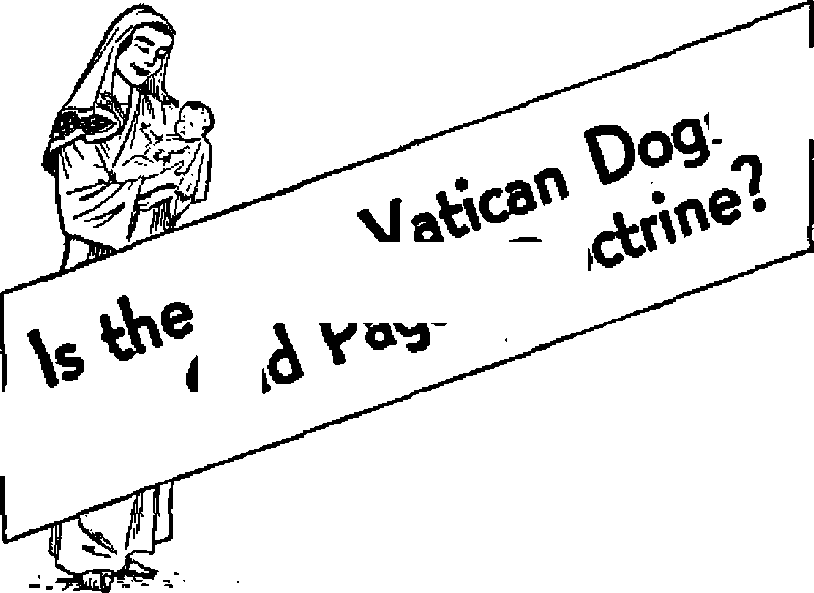

IS THE NEW VATICAN DOGMA AN OLD PAGAN DOCTRINE?
. . . i ' ■■ \ f . - ’ . . ...
Communists Fight Jehovah’s Witnesses ■ r-Sc v.. h h.r ■ s 1. ■ ■ ;
"Little Red Riding Hood”
\ ■■ /?. ; s.a! t ’ r v, ■. ; i <■»>
The Communist Control Law
: ’ : M ...... . : , ; . ♦ \ : Il - <• . ; ■ 1 ... -
Modem Faith Cures?
THE MISSION OF THIS JOURNAL
News sources that are able to kefip you awake to the vital Issues of cur times must be unfettered by censorship and selfish interests. “Awake 1’* has no fetters. It recognizes facts, faces facte, is free to publish facts. It is not bound by political ambitions or obligations; it is unhampered by advertisers whose toes must not be trodden on; it Is unprejudiced by traditional creeds. This journal keeps itself free that it may speak freely to you. But it does not abuse its freedom. It maintains integrity to truth.
“Awake 1” uses the regular news channels, but is not dependent on them. Ite own correspondents are on all continents, in scores of nations. From the four corners cf the earth their uncensored, on*the-scenes reports come to you through these columns. This Journal’s viewpoint is not narrow, but is international. It is read In many nations, in many languages, by persons of all ages. Through its pages many fields or knowledge pass in review—government, commerce, religion, history, geography, science, social conditions, natural wonders—why, its coverage is as broad as the earth and as high as'the heavens.
“Awake I” pledges itself to righteous principles, to exposing hidden foes and subtle dangers, to championing freedom for all, to comforting mourners and strengthening those disheartened by the failures of a delinquent world, reflecting sure hope for the establishment of a right' eous New World.
Get acquainted with “Awake!” Keep awake by reading “Awakel”
Published Stiiisioni'iilt Bt WATCHTOWER BfELE AND TRACT SOCIETY, INC.
117 Adams Street
N. fl. Knorr, P/Wf'dac*
Printing this fosue: 870(DC0
Lang rates i* which thi* mainline it pt blight fl: Setoimtmthlr-—Atriteatns, En&Iish, Gentian, i'pisa^U. McmlJily—'Danish, French, Gesek, Portuguese, Swedish. Ukrainian.
Offices Yearly Hutaeriptlon Bate
Ji re erica, 0.S., 11? AAatnn Si., Bwklyn 1, N.Y. $1 Australia, 11 Ecmford Rd,, Stratuneld. N-B.W, Sa Canada, 40 Irwin 4r> , Twanifl 5, Ontario $1 England. 34 Craven Tmtt, Loiuinn, ¥V. 2 <e South Africa, 623 Boston House, Cuje Town ?s
Entered as second-d88a matter at Brcoklyh, N. Y,
Brooklyn 1, N. Y., U. S. A, Grant SuiTua, Secretary
Fivo cents a copy
Remittances should be sent to office In yom country in compilMiee with regulations to suarantjw safe delivery of money. Remittanoesr are iWPeptol at Biwlifjn front exJiBKrm where no office Ie iucateef, by International money order only, Subficrtption rates In different countrieB are here stated tn local currency, of •xplratlcn t with renewal bl aftk) Is sent at tea$t two tsstres itefofs subewlpiJim ex-flrtH. C/wnpr of iiiftit sent to aw ofSen may be expected effective within one month. S^nd your old as well as new address.
Art of Match 1879.. Prints JU U.S.A
CONTENTS
Communists Take Over the Nazi Fight
to Smash Jehovah’s Witnesses 3 Is the New Vatican Dogma an
Hong Kong—Modern City of Refuge
"Your Word Is Truth”
“Now ft is high time to awake.”—Romans /3:li 91
Volume XXXII Brooklyn, N.Y,, January^ 1951 Number 2
Communists Take Over the Nazi Fight to Smash Jehovah’s Witnesses
iiTS BOLSHEVISM better than other I systems? Does the SED believe that that which Hitler began must be finished by them? We are no more afraid of the SED than we were of the Nazis!” Thus spoke Erich Frost, who had spent twelve years in a Nazi concentration camp because he was one of Jehovah’s witnesses. He mate this ringing declaration as spokesman for the witnesses at a district assembly held in Berlin in 1949 for those witnesses living in the Soviet zone of Germany. Attendance exceeded 33,000.
The communist warfare against Jehovah’s witnesses in East Germany has grown hotter ever since, and on September 4, 1950, a United Press dispatch reported: “The East German Communist government banned Jehovah’s witnesses in the Soviet zone today.” The next day a Reuters dispatch said: “The East German security police have thrown 1,000 of Jehovah’s witnesses into prison in the twenty-four hours since the East German government banned the sect” Following is, a write-up appearing in the October 12,1950, Die Wochen Zeitung, Zurich, Switzerland, sent by their correspondent in Germany:
“Before the supreme court of the Soviet Zone Republic in Berlin, the rulers in East Germany staged a spectacular trial )f a special kind. It was directed against 'line leading members of the religious community of Jehovah’s witnesses that was recently banned by the Grotewohl government. For the first time in a political lawsuit in the Eastern zone the charges raised were, ‘Agitation against the Stockholm Peace Appeal’ and, in view of the forthcoming election on October 15, ‘Slandering the people’s election? In addition Jehovah’s witnesses were charged with continuous espionage, agitating to boycott, war propaganda and slander against the Soviet Union and People’s Democracies.
“It was little surprising that the sentences were extraordinarily severe with such serious charges raised east of the Iron Curtain, The vice president of the court, Dr. Hilde Benjamin (known in Berlin as ‘Red Hilde’), pronounced the sentences proposed by the general state attorney, Dr. Melsheimer. This meant penal servitude for life for two of the defendants and 8 to 15 years’ penal servitude for the others. In pronouncing the judgment Frau Benjamin labeled the religious group as a ‘religiously disguised espionage organization’. And then she stated further: ‘The judgment is to serve as an emphatic warning to the unteachable members of Jehovah’s witnesses who believe they can continue their work in the German Democratic Republic?
“Already before this sensational trial the East German Communists tried to break the backbone of these fanatical champions of the Christian’s faith. With the aid of the State Security Service the East Zone Gestapo dragged the leading ministers of this religious group out of their beds at night and shut them in concentration camps. At the beginning of September the East German headquarters of Jehovah’s witnesses (known too under the name of Bible Students) in Magdeburg with 60 ministers was dissolved. As stated in a confidential circular letter of the central committee of the SED (Social Unified Party), this organization has alarmingly risen in numbers which has become unpleasantly conspicuous in the ‘democratic organizations of the masses’. That the Communists picked so severely on the Bible Students had its good reasons: they belong to those that oven today in Soviet Germany speak out plainly what they think. There are about 50,000 Bible Students in Germany; about 30,000 of them live in the East zone.
“On the grounds of their faith Jehovah’s witnesses are forced to the position of enemies of the state in every dictatorship. They reject every earthly authority and do not believe in higher powers by the grace of God. Rather they set their hopes in a coming kingdom of God which is based on the Bible words: ‘All power is given unto me in heaven and in earth,’ Jehovah’s witnesses are of the opinion that Satan’s old world entered its final phase in the year 1914 and that Jehovah is now about to bring in the new world to which they aspire.
“As the Bible Students consistently refuse military service and the honoring of state symbols and leaders as idolatry, they already came into conflict with the regime in Hitler’s time. Over 10,000 of the members of this sect languished in prison during these years. At that time they were accused of pursuing Jewish-Communist aims under the cloak of religion. But Jehovah’s witnesses preferred to die rather than renounce their faith. Over 1,000 were executed, a further 1,000 died in the prisons and concentration camps into which they were thrown, sometimes only because they refused the Hitler salute.
“Today these same apostles of the faith, as harmless as they are fanatical, are again the objects of bloody persecution. The men and women who are vegetating today in East German concentration camps are often the very same persons who were held in Hitler’s camps. While at that time they were persecuted for refusal of war service, today in the Pieck Republic they are branded as war agitators,
“And what did ‘Red Hilde’ say in the Berlin big trial? ‘The judgment is to serve as an emphatic warning to the unteachable members of Jehovah's witnesses who believe they can continue their work in the German Democratic Republic.* Now, the Bible Students not only believe in the continuance of their work, but they do continue it in spite of all persecution. How unshakable their faith is was recently proved by thousands of them who illegally left the Soviet occupied territory’ last week tO be present at an assembly of Jehovah’s Witnesses in the British sector of Berlin attended by 20,000 persons. Although the People’s Police had ordered them to report several times a day and otherwise taken all precautions to prevent their attending the assembly, they made their way to Berlin. And although hundreds of them were held up and arrested on the way there by the People’s Police, those who had penetrated through to the British sector, West Berlin, returned to the Soviet zone despite the threat of arrest. When their brethren in the faith in the West wanted to keep them back, they merely replied: ‘We shall continue to preach in handcuffs? ”
In the face of all these facts, the thought that now comes to us is this: Would the religious priests and preachers and troublemakers that stir up mob violence against Jehovah's witnesses in the United States and^other democratic lands by smearing them as communists stand against communism an.l speak boldly against it if they lived in East Germany? Would they risk life imprisonment to attend their church meetings? Would they be willing to lay down their life by exposing communism openly? Would they have the faith and
«*>■ ■
mass
ished, was
“THE immaculate mother of God, Mary ever Virgin, when the course of her life on earth was fin-
taken up body and soul into
heaven.” Thus spoke Pope Pius XII on November 1, 1950, as he proclaimed the assumption of Mary to be infallible Roman Catholic dogma.
It was a momentous occasion at the Vatican, for 70 per cent of the 53 living cardinals were present, plus 480 archbishops and bishops, plus the ambassadorial representatives of some 40 nations, plus many distinguished notables, among them that sly old Nazi fox, Franz von Papen, who was convicted as a major war criminal/ plus an estimated crowd of 500,000 people. “Scores of persons,’’reports the New York Daify NTws, “were hurt in the excited throng that jammed St. Peter’s courage to say to a Communist court that had just sentenced them to long years in a concentration camp, as did one of the nine witnesses in the above case in Berlin: “We will outlive you the same as we outlived the Nazis”?
Think deeply on these facts. And remember them the next time some malicious rabble-rouser hurls the name “Communist” at one of Jehovah’s witnesses.
Square and overflowed into the s^de streets. Riot squads of police had to be called to supplement the Vatican's gendarmerie.” According to the London Catholic Herald it was a sellout, with “more than 200,000 applications for tickets of admission to St. Peter's” for the solemn
that followed the proclamation. “A
ton of wax and a mile of wick” were turned into 1,000 candles for the occasion. The ceremony was televised and broadcast by radio, and millions of words in thousands of newspapers and magazines told about it. Hundreds of church bells rang throughout the world. And the Franco government ordered all fortresses and mark the occasion by firing three 21-gun salutes.
warships to not one but
pope’s pro-
Repercussions from the nouncement were heard around the world. In Italy the Waldensian and other Protestant churches raised their voices in objection. The archbishops of Canterbury and York declared that the Church of England “refuses to regard as requisite for a saving faith any doctrine or opinions which are not plainly contained in the Scriptures”. The Free Church Council, representing all Protestant churches other than the Church of England, also protested. The British scientist Dr. Julian Huxley described the dogma as “an act of intellectual immorality, which the world can ill tolerate”. “We as Lutherans,” reads a resolution adopted by the American Lutheran Conference, “must protest that there is no basis for the dogma in scripture or in the ecumenical creeds.” And in the famous Riverside church in New York city Dr. Robert J. McCracken stated: “There is not a shred of Biblical .evidence to support it. Its acceptance involves defiance of all the canons of historical scholarship.” The Protestant Association of South Africa went even further, and in a cable to the pope said that the new dogma was “a legend of pagan origin”.
These charges laid against the Roman Catholic Hierarchy by the great Protestant organizations are of such a serious nature it is well for everyone—whether Catholic, Protestant, non-Christian, or atheist—to examine them closely. Can it be that there “is no basis for the dogma in scripture”, that “there is not a shred of Biblical evidence” in support of it, that it is “an act of intellectual immorality”, that it is really “a legend of pagan origin”? These are the charges. What are the facts?
The great Master and Teacher, the expounder of divine wisdom and understanding, Christ Jesus, said to Jehovah God, “Thy word is truth.” (John 17:17, Douay) What God's Word the Bible says on the subject is therefore infallible because it is the truth and the truth cannot be successfully contradicted.
The apostle Paul's whole argument in the fifteenth chapter of First Corinthians is that no one, not even Mary or the man Jesus Christ himself, can take his physical human body with him to heaven. “But some man will say: How do the dead rise again ? or with what manner of body shall they come?” Only a "senseless man", Paul says, would ask a question like that\ For do you not know, he reasons, that if you sow in the ground bare kernels of wheat or com they first die before a new plant comes forth? And do you not know that the new plant is entirely different in appearance from the seed that was sown? “God giveth it a body as he will: and to every seed its proper body."—1 Corinthians 15:35-38, Douay.
So in the resurrection of those who will live in the heavenly kingdom, their' bodies are different. “It is sown in corruption, it shall rise in incorruption. [Hence it rises not in human flesh, for that substance is corruptible.] It is sown in dishonour, it shall rise in glory. It is sown in weakness, it shall rise in power. It is sown a natural body, it shall rise a spiritual body. If there be a natural body, there is also a spiritual body.”—1 Corinthians 15:39-44, Douay.
Next Paul reaches the climax of his argument. Since earthly creatures have earthly bodies and heavenly creatures have heavenly bodies it is absolutely impossible for the physical, fleshly, mortal human body to be taken into the spiritual heavenly realm. “Now this I say, brethren, that FLESH AND BLOOD CANNOT POSSESS THE kingdom of God: neither shall corruption possess incorruption." There must be a change. “For this corruptible must put on incorruption; and this mortal must put on immortality.” (1 Corinthians 15:45-53, Douay) Jesus* own testimony confirms this fact that human bodies of flesh and blood cannot enter heaven.—John 3:3-12.
All scientific knowledge also agrees that it is impossible for human creatures to leave earth’s atmosphere unless riding a space ship, and Mary had no such equipment. It is therefore "intellectual immorality” to teach such a thing. Dr. Anton J. Carlson, president of the National Society for Medical Research and professor emeritus of physiology at the University of Chicago, says that it is preposterous to think that Mary went alive up through the atmosphere, “If she did/' Dr. Carlson says, “she would surely have died of asphyxia the moment she got up 50,000 feet”
When speaking about this new dogma, R. J. Heenan, superior of the Catholic Missionary Society, exalted the Catholic Church above the Bible as a teaching body by declaring: “Where would we have knowledge of the Bible if the Catholic Church had not chosen from among countless manuscripts and sacred writings those which were considered to be the authentic scriptures?” Well, if that be so, why did the Hierarchy fail to include even a single manuscript telling of Mary's assumption to heaven? Simple enough: there were none!
This fact, however, does not disturb the Roman Catholic Hierarchy. Rashly and in open defiance of God's commands (Deuteronomy 4:2; Proverbs 30:6; Revelation 22:18,19), they brush aside His sacred Word of truth and replace the Bible with the traditions and fables of men, and upon such they base their dogmas. Tradition, they say, teaches that Mary’s body, “in the presence of all the apostles, was placed by them in Gethsemane, but was immediately transported to heaven/’ and this event “probably took place in the year 48 or 49”. If such tradition were true is it not indeed strange that though “all the apostles” saw this miracle, yet not a whisper about it by any of them?
The fancied legend about the twelve apostles' witnessing the “miracle” was not manufactured until the fifth century. Not until 597 was the Feast of the Assumption, August 15, added to the calendar. Not until 1854 was the dogma proclaimed by papal bull that Mary herself was conceived and born sinless. And now, 1950, a similar bull assumes that her body, sandals and all, went to heaven.
But how can the pope do such a thinfe? By his vaunted “infallibility”. Granted, there are no Scriptural, historical, archaeological, scientific or logical facts or evidence upon which to base the claim that Mary’s body went to heaven, nevertheless, what the Catholic Church decrees, that is law. Hie claim is made that the church cannot err, therefore whatever she declares to be the truth must not be questioned even though it cannot be supported by facts, history or Scripture, yea, even though contradicted by all facts, history and holy Scripture! But is it true the Catholic Church is infallible and cannot err? Was the church infallible in pahtlcal doctrine when she entered marriage relations with brutish Mussolini and the madman Hitler by signing concordats with them? Was the church infallible when she gave aid and comfort to “Franco the butcher” in his murder of 2,000,000 men, women and children? Was she infallible when she blessed the invasion of Albania by Roman Catholic troops, when she blessed traitor Petain, when she blessed the rape of Ethiopia, or when she entered diplomatic relations with the dictators of Japan shortly after the Pearl Harbor attack? No, the Catholic Church has erred often and made plenty of mistakes. Therefore, no credence can be placed in a dogma simply because it is sponsored by this so-called “infallible” church.
The honorable superior of the Catholic Missionary Society, the “Rev.” Dr. J. C. Heenan, in seeking to express the strongest proof of authenticity for the new dogma, declared that “there could scarcely be a more obvious mark of authority” than the fact that 400,000,000 Catholics will now give obedience to it. Out of fear of being persecuted as heretics they do so: “Beginning today [November 1] 400,000,-000 members of the Catholic religion must believe explicitly and without reservation —otherwise they will incur excommunication as heretics—the Catholic tradition of the Assumption now defined as a dogma or an article of faith,” (New York Times) But even if all such fear were removed it is still a stupid thing to say that because millions of people believe the dogma such constitutes an “obvious mark of authority”. Why, millions of people once believed the earth was flat, but that did not stamp the lie as infallible truth.
What about the charge that this assumption dogma is purely “a legend of pagan origin”? Is there any factual evidence to support such a bold assertion as this? Research shows that the ancient Greeks worshiped a “Holy Virgin” which they considered “immaculate” from its conception and birth. Pausanias, for example, in describing a certain pagan grove, says: “This grove contains a statue of Apollo Carneus, of Mercury carrying a ram, and of Proserpina, the daughter of Ceres, who is called ‘The holy virgin.’ ” The purity of this pagan goddess was especially due, so it was believed, to her “immaculate conception”, for Proclus tells us: * “She is called Core, through the purity of her essence, and her undefiled transcendency in her generations/’—See Taylor's Orphic Hymns, p. 198.
Alexander Hislop, in his monumental work The Two Babylons (pp. 125,126), gives additional evidence showing that the Babylonians as well as the Grecians believed in the assumption dogma. Rome’s Catholic Hierarchy merely carried it over from the ancient pagan systems of demonology. “It is impossible/’ says Hislop, Ofor the priests of Rome to find one shred of countenance for such a doctrine in Scripture. But, in the Babylonian system, the fable was ready made to their hand. There it was taught that Bacchus went down to hell, rescued his mother from the infernal powers, and carried her with him in triumph to heaven. (ApoUodorus, lib. iii. cap. 5, p. 226) This fable spread wherever the Babylonian system spread; and, accordingly, at this day, the Chinese celebrate, as they have done from time immemorial, a festival in honour of a Mother, who by her son was rescued from the power of death and the grave. The festival of the Assumption in the Romanish Church is held on the 15th of August. The Chinese festival, founded on a similar legend, and celebrated with lanterns and chandeliers [Catholics use candles instead of lanterns], as shown by Sir J. F. Davis in his able and graphic account of China (vol. i, pp. 354,355), is equally celebrated in the month of August.” In a footnote on page 125 Hislop gives additional evidence, proving that the assumption idea is entirely pagan in its conception.
So who and what are you going to believe? Are you going to believe the traditions of men, the “hand-me-down” legends of the pagans that are dressed up as modern dogma by all the ecclesiastical pomp and glory the twentieth-century papacy can muster, or are you going to believe the Almighty and Eternal God’s infallible Word of truth? Are you going to close your eyes to what the Bible says and blindly believe that Mary’s body went to heaven, or are you going to read and believe the Bible? Follow the counsel of the Bible, “Prove all things; hold fast that which is good.” Know the truth “and the truth shall make you free” from enslaving creeds and dogmas of men.—Isaiah 8:20; 1 Thessalonians 5:21; John 8:32, Douay.
—As a dictator would tell it
This article wat written by newspaper columnist H. I. Phillips and published in “Collier’s” mgga-zine, January 20, 1940, At that time its Irony was aimed at the brown and black dictatorships of nazism and fascism. Now, eleven years and a world war later, this clever parody la Just as pointed against the Red dictators of communism. It is here reprinted by the kind permission of Mr. Phillips and the publishers of “Collier's” magazine.
ONCE upon a time there was a poor, weak wolf. It was gentle and kindly and had a heart of gold. It loved everybody and felt very sad when it looked around and saw so much deceit, selfishness, strife, treachery and cunning on the loose. All it wanted was to be let alone.
Now in a cottage near the edge of the forest there lived a little girl who went by the name of Little Red Riding Hood. (It was obviously an alias.) She was a spy, a vile provocateur and an agent of capitalistic interests. Anybody could tell by one look at Little Red Riding Hood that she was full of intrigue. Her golden curls reeked, with base designs. Her pink skin showed tyranny in every pigment.
To the casual spectator, perhaps, Little Red Riding Hood might seem just a pretty, little ten-year-old child, but that was a superficial piece of character analysis. The
himself up, and then went for a little walk. When the wolf walked he liked to think
things over. He liked to dwell on the unhappiness in the world and to think up ways for ending it and making everybody happy and self-sustaining. This took a lot of concentrating and when he was concentrating the wolf sometimes got lost in thought and didn't know what he was doing. Suddenly, and before he knew what was what, he found himself not only in Grandma’s cottage but in her bedroom!
He had kicked down the door!
Grandma was pretty startled and demanded, “What is the meaning of this?” “I am repulsing an invasion,” the wolf explained, scorning all subterfuge.
Grandma was the aggressor. That was clear.
So the wolf ate her up.
It was a counterattack with pursuit.
Then the wolf heard footsteps in the hall. He was terribly frightened by this time. It had been such a harrowing morning.
Suddenly there came a faint knock on the door. The wolf realized at once that he was in for more persecution.
“Who’s there?” he asked.
kid was not to be trusted an inch. She was a rattlesnake, a viper and an imperialist. And on top of that she was not interested in peace or a better world order.
Little Red Riding Hood had a grandmother who lived about two miles away. Grandma was a louse too!
No wolves liked her. They never invited her anywhere.
It came to pass that one day the poor, weak, helpless wolf took an aspirin and some spring tonic, to brace
“Little Red Riding Hood/* came the reply in a child’s voice.
The wolf saw it all now. He was surrounded!
So he put on Grandma’s nightgown and nightcap and jumped into bed, to do some more thinking. He liked to think in bed. It was next best to thinking when out walking in the woods.
“Come up, my child!” the wolf cried to Little Red Riding Hood, his teeth chattering with fear and apprehension.
Little Red Riding Hood started upstairs and, oh, what an ordeal that was to the poor little wolf! It seemed that she would never make the top landing. “Clumph, clumph, clumph!” came her footsteps, stair by stair. “Clumph, clumph, clumph!”
The wolf was in terror, but he summoned all his courage and waited.
At last Little Red Riding Hood came striding into the bedroom. She was very overbearing, the big bully!
The wolf watched as she put down her huge basket of groceries. “Poisoned food,” he thought. The wolf was no fool. The wolf had been around.
“I have brought you some nice goodies, Grannie,” said Little Red Riding Hood with a smile that might have fooled the democratic states, but that made no impression on the wolf. He knew that kind of smile. He had seen it on all photographs of international bankers in the newsreels. He saw that he was now in greater danger than ever.
“I don’t feel like 'eating now,” said the wolf, “we’ll come to that later.” He was just stalling for time, of course, as his eyes ran over Little Red Riding Hood from her ankles to her head. “Come, sit over here on the bed!”
Little Red Riding Hood jumped at the invitation. The wolf was now in a panic. Never had he been in such danger.
“Why, Grandma, what big eyes you
have!” exclaimed Little Red Riding Hood, alter a moment,
“The better to see you with, my dear.”
“And, Grandma, what a big mouth you have!”
The wolf didn’t like that crack. “The better to kiss you with, my sweet,” he stalled.
“And, Grandma, what big teeth you have!” said little Red Riding Hood.
This was too much. She was getting too personal. In fact she was exhausting the patience of the wolf. And if there was anything the wolf couldn’t stand it was having his patience exhausted.
“Ah, let’s quit stalling!” the wolf cried, rebelling against deceit and trickery in any form. “I’m not your grandma. I’m a wolf. I’m a good wolf, a nice friendly wolf. I don’t want any trouble with anybody. And what happens? First your grandmother ambushes me . . . and now you try to cut off my retreat!”
“What became of Grandma?” asked Little Red Riding Hood, always looking for trouble.
“I question the propriety of your asking me that question,” said the wolf, who was a stickler for international law. “But if you insist, put it in writing and address it to me via the proper diplomatic channels.”
“I want to know what happened to Grannie,” repeated Little Red Riding Hood, pulling a knife on him.
Well, no self-respecting wolf could stand for a brazen attitude like that. And besides there was the matter of candor and honesty. “Oh, well, since you want to know. I ate her up,” the wolf announced. “I ate her in self defense.”
Little Red Riding Hood got off the bed and stood looking at the wolf now. The wolf watched her weep and wring her hands. She gave way to all these emotions of ferocity, barbarism and hatred.
“Ah,” said the wolf. “So now you are
going to attack me, too?’ Little Red Riding Hood now got onto tfie floor on her hands and knees and showed her teeth. She crouched .for a spring. She began growling.
There was not a minute to lose. The wolf was in deadly peril. He was encircled. This was a fight for his existence. Leaping from the bed, he struggled with Little Red Riding Hood, using nothing but his superior strength, his long claws, his enormous teeth and his jaws of steel, while the kid used brass knuckles, knockout drops, poison gasT a magnetic bomb, a sledge hammer and a hatchet.
Little Red Riding Hood fought savagely and barbarously, violating all the rules, ignoring all treaties and showing contempt for all ethics. It was a terrific struggle. But the wolf won by sheer courage. He tore Little Red Riding Hood to pieces to preserve his dignity and ate her up as a matter of principle.
‘Til teach ’em not to terrorize me,” said the wolf, resuming his walk through the woods, thinking and thinking.
He was getting his patience back now.
<L The following letter came ’from the parent of a school child tn the Tulsa, Oklahoma, Tribune and was printed by that paper on February 14, 1950: “Editor, The Tribune:
"Several days ago my child, a fourth-grad er, seemed depressed and listless at his evening meal. When it was time for bed, he broke into unaccountable sobbing. After nearly an hour of careful, sympathetic questioning, all we could get from him was, ‘I don’t know what’s the matter. I’m just afraid of terrible diseases and things like that, and I can’t get them out of my mind.' It took at least half an hour more of gentle talk—diverting his mind to other things— and head and back-rubbing, before his small body was relaxed enough so he could go to sleep.
“The next day his peculiar behavior was mentioned to a group of other parents. Several of them reported somewhat similar behavior by their own children in recent weeks. Something that had happened at school was the obvious cause. We checked with a teacher, and she clarified it in a hurry,
" ‘Those poor youngsters/ she said, ‘have been flooded and nearly drowned with vicious, whip-cracking, carefully contrived campaigns for money for “health campaigns”. Th%y have been told find told and told that polio is hovering over their shoulders, and "Bring money to fight it”; that heart disease kills children as well as adults, and "Bring money to fight it”; that tuberculosis is everywhere, and “Buy stamps to fight it”/
" 'Is it any wonder/ the teacher asked, 'that sensitive, growing children are being frightened to death?’
“Granted, the campaigns may be legitimate and laudable in their final aims. We won't argue about that. But this parent, for one, feels nothing but revulsion for any campaign which must prey on the minds of school children, must instill fear into their hearts, must warp their happiness so that a few extra dimes or dollars can be raised/’
BECAUSE specific uses have never been given In detail lor every organ in the body, some have flirted with the folly that the Creator has given us some belongings so unessential that the sooner they are snipped out the better.
Evolutionists have seized on the foregoing circumstances to support their theory that man is a creature of evolution who is yet possessed with ever-receding remnants of organs now useless but once important to him while in a lower stage of development. Such organs under attack from evolution have included the tonsils and the vermiform appendix. Now, however, increased information continues to throw further light on hitherto dark subjects.
While no specific explanations of the detailed use of the tonsils have yet been offered, men of medicine are today more convinced than ever that they should not be taken out just for the sake of ‘getting it over with’, as was once the custom. Furthermore, the old general belief that the tonsils were simply “infection centers'* that were liable to promote such other ailments as chronic colds, rheumatic fever, kidney infections, etc., has been discarded. Dr. Max Michael of Emory University, Atlanta, Georgia, has presented evidence from many examinations in an article appearing in the American Journal of Medicine, in support of exercising great caution in the removal of tonsils.
Penicillin has proved a vital aid in reducing the number of necessary tonsillectomies. Following a children’s party a barrage of sore throats disclosed the tonsils of the victims swarming with streptococcus germs. However, penicillin treatments subdued the epidemic promptly.
The vermiform appendix has absorbed the brunt of the skeptics’ jibes with respect to “useless” organs. At last, however, the tide has been turned back against the scoffers. The June 5, 1950, issue of Time disclosed that Chicago University’s Dr, Leon O, Jacobson
has uncovered a veiy likely use for the appendix.
It is known that victims exposed to radiation (as, for example, following an atomic bomb explosion) often die from anemia, since the bone marrow’s blood-building facilities are damaged. Everyday X-ray treatments have to be administered with the greatest care due to this, and this has hampered cancer treatment by X-ray. Using a rabbit for experiment, Dr. Jacobson protected the animal's spleen and appendix with lead and then proceeded to administer what would have ordinarily been an overdose of X-rays, This time the undamaged spleen and appendix were able to produce enough blood to atone for the loss of other blood-producing sources and the rabbit survived. Though the rabbit trick, which would require a major operation, could not be tried on man, Dr, Jacobson believes the blood-building organs (Including the appendix) may contain a regulating hormone which he hopes to isolate so that it may be used to speed recovery of radiation patients and allow for heavier X-ray doses.
There is another progressive step in the medical profession worth mentioning. The June, 1950, bulletin of the Westchester County (New York) Medical Society has urged a revision of the medical doctor's vocabulary to strip it of unintelligible words of Latin and Greek derivation and enable the doctor to tell his patient what is wrong with him and what he intends to do about it. The journal hastened to point out that present burdensome words and phrases of the medical profession’s vocabulary were not intentionally used to pat outside listeners in the dark, but rather they are there due to the long history of the profession which has necessitated words of Latin and Greek origins coupled with additions from later sources as time went on. The fault is also due to the “growth of many new synthetic chemical substances and the resultant creation of synthetic nomenclature”, the journal said.
The Communist Control Law
Will it control communists?
Will it affect traditional American freedom?
HOW to approach the threat of communism has been a political hot potato in many lands. It was a main issue in a 1949 Australian election campaign, Panama outlawed the party April 29, 1950. The same year Canada’s House of Commons decided on May 2 that the situation was well in hand there without having to outlaw communism. England’s Conservatives pledged^ to “employ every legitimate means to combat the insidious advance of communism”, but opposed outlawing the party.
Anticommunist legislation was tossed around in the United States for many months, until, at last, several bills were thrown together into an all-inclusive communist control law, the Internal Security Act ot 1350 (also called the irMcCarran law” and “H.R. 9490”), which was rushed through the 81st Congress just before election time. It was an extremely controversial act. Those in favor said it is needed to ferret out and stop communists, while those opposed called it a “blunderbuss” that would damage all civil liberties, but not really cripple communists. Truman vetoed it via 5,500 words to Congress.
He contended that it would actually help the communists, sa\A It was too hroaft and dangerous, yet 286 representatives and
57 senators either disagreed with his reasons or feared the political repercussions of voting against anticommunist legislation, for they overwhelmingly overrode Truman’s veto, and the bill became law.
A Brief Look at This Law will show us what it is all about. It is made up of two parts, the Subversive Activities Control and the Emergency Detention Act. It totals 50 pages, more than 25,000 words, and contains many different legislative proposals with just one thing in common: they are all supposed to be anticommunist.
The law prohibits conspiracy to “contribute to the establishment within the \jnhed oi a Yotantafian dictatorship”. It forbids communists to hold any nonelective employment under the United States government, and forbids members of communist action organizations from engaging “in any employment in any defense facility”. It authorizes the publication of a list of “defense facilities” (war plants, laboratories, railroads, etc.) and orders each such facility to post a notice advising employees and applicants that it comes under this, section. at the. law.
It denies passports to communists and requires communist organizations to register with the attorney general and report the names of their officers, the money received and spent, and in some instances to give the name and address of each member. It requires members of such organizations to register individually, if the organization has failed to register.
It bars organizations registered as communist irom sending publications by mail unless the envelopes or wrappers are
marked, “Disseminated by----- a Com
munist organization/’ and any radio broadcasts they sponsor must be introduced by the announcement, “The following program is sponsored by ------ a
Communist organization.”
When an organization that the attorney general believes is communist fails to register, a five-member control board will decide whether the organization comes under the scope of the law. Its decision can be subject to appeal to the courts, which “shall have power to affirm or set aside the order of the Board”.
The law also provides that any alien who advocates the doctrines of world communism "or any other form of totalitarianism” will not be admitted to the United States, and such aliens now in the United States may be deported.
Additionally,, it prohibits picketing or parading in an attempt to influence the outcome of a court case.
The second part of the law, the Emergency Detention Act, provides that “in the event of . . . invasion . . . declaration of war . . . or insurrection within the United States” the president may proclaim an “internal security emergency” and then apprehend those “whom there is reasonable ground to believe . . . will engage in ... acts of espionage or sabotage”.
When a person is detained under the Emergency Detention Act he will be taken before a hearing officer, may have a preliminary examination, may appeal to the Detention Review Board, and provision is made for him to appeal to the courts. He may cross-examine the witnesses against him, but evidence will not be furnished that “would be dangerous to national safety to divulge”.
have been many, long and loud. Obviously the communists objected, but also many anticommunists, including responsible newspapers and magazines, the C.L O., the A. F. of L., high government officials, and others. The London News Chronicle (Oct. 14, 1950) said, “The American people . . . have dropped a legal blockbuster on their own front porch.” The Christian Century (Sept. 27) called it “fighting fire with gasoline”. The New York Times (Oct. 11) spoke of “the many silly features of Senator McCarran’s masterpiece”. The Southern Farmer (Oct. 1950) said, “This legislation is jusf what the Communists want. . . . When men are subject to arrest and' punishment for what they believe, then we have gone back to the days of King George II, back to the days of the Inquisition.”
New/York’s Senator Lehman, a Democrat, voted against the bill and explained: “My conscience will be easier, though I realize my political prospects will be more difficult, I shall cast my vote for the liberties of the people.”
According to President Truman, “The Department of Justice, the Department of Defense, the Central Intelligence Agency, and the Department of State have all advised . . . that the bill would seriously damage the security and intelligence operations for which they are responsible.”
The most vigorous condemnation came from Truman himself, who said, “The application of the registration requirements to so-called Communist-front organizations can be the greatest danger to freedom of speech, press and assembly since the Alien and Sedition Laws of 1798.” (From Truman’s veto message)
Truman’s principal objections to this bill were that it would (1) “aid potential enemies by requiring the publication of a complete list of vital defense plants” [he could not “imagine any document a hostile foreign government would desire more”], (2) “waste immense
amounts of time and energy attempting to carry out it3 unworkable registration provisions/’ (3) “deprive us of the great assistance of many aliens in intelligence matters,” (4) “antagonize friendly governments,” (5) “put the government ... in the thought control business/’ (6) “make it easier for subversive aliens to become naturalized ♦ . . citizens,” (7) “give government officials vast powers to harass all of our citizens in the exercise of their right of free speech.”
Consider his statements showing the law’s failures. He said that the communist registration provisions would be “ineffective”, would provide “no information about Communists that the F.B.I. and other security agencies do not already have", but would cost “a great deal of time, effort and money—all to no good purpose”. “The idea ... is about as practical as requiring thieves to register with the sheriff,” he said. Years would probably elapse before the final disposition of a case in court. Then the organization could frustrate the law by dissolving and establishing a new one with different name and officers. By the same method they could “easily and permanently” evade the requirement that they label publications sent through the mails. He said it would be years before this bill would prohibit employment of communists in defense plants—“if it ever would.”
Note these statements from the veto message: “The language of the bill is so broad and vague that it might well result in penalizing the legitimate activities of people who are not'Communists at all, but loyal citizens. . . . Instead of striking blows at communism, .[it] would strike blows at our own liberties . . ■ We will destroy all that we seek to preserve, if we sacrifice the liberties of our citizens in a misguided attempt to achieve national security.”
He cited the provision of the bill that identifies a communist-front organization by “'the extent to which the positions taken or advanced by it, . . do not deviate from those’ of the Communist movement”, and explained that under this provision an organization advocating low-cost housing might be classified as “Communist-front” because communist propaganda regularly exploits slum conditions. “It is not enough to say that this probably would not be done,” he said/but the fact that it couZd be done shows the opportunities the law allows “for official condemnation of organizations and individuals”. He complains that it moves toward suppressing opinion.
There are those who disagree with Truman’s objections. It has been said that his objections are “wittingly or unwittingly ... in line with the interests of the Communist Party”. Whether he had reasons other than those expressed in the veto message is not known, but he did not condemn this law because it is anticommunist, but because it would not actually cripple communist action, while sections of it could cripple American freedom.
are many. It was no surprise when communist organizations flouted the requirement that they should register. The Communist party had announced in advance that it would not register, and communists expressed determination to fight for repeal of the law and to push a court test of its constitutionality. Communist-front organizations were not expected to be any more helpful, because registration would be open acknowledgment of communist sympathies. So, if the law is to be enforced, apparently it will be done the hard way.
But the greatest publicity was given, not to the communists, but to the strict application of Section 22, which says aliens shall not be admitted to the United States if they have ever been members of any “other totalitarian party”.
Opera singers, musicians, doctors, businessmen and plain citizens arriving in New York were hustled off to Ellis Island when they had to admit that they had been members of the Hitter Youth or joined Fascist labor organizations or other totalitarian parties. Hundreds were held. Finally in sheer self-defense, the Justice Department ordered all visas suspended. The London News Chronicle (October 13) commented, “The government fin Washington] has suddenly taken the extraordinary step of halting in their tracks thousands of people all over the world who are preparing to travel to the United States.”
Italy was outraged, Western Germany was hurt. The Italian ambassador said that application of the act to Italian ships violated the United States-Italian treaty of friendship and commerce. Officials estimated that the law would exclude 90 per cent of all Germans and more than half of all Italians.
Ironically, Senator McCarr an, who sponsored the new immigration rules, was a particular friend of Spain's dictator Franco, whose Falangists were excluded under the act’s language; which would also apply to Latin-American “Good Neighbors” who lived under strong-man machines in the past, or at present.
The law's supporters protested that the administration was overdoing its application to discredit the law, but the Justice Department insisted that its wording allowed no alternative.
Then on October 31 the alien ban was modified somewhat by Attorney General J. Howard McGrath, who announced that aliens who had been Nazis and Fascists in name only, or who joined to get education, food or employment, or before reaching 16, would be permitted temporary entry into the United States. But the section regarding aliens traveling to the United States is only one part of the law.
Main Purpose of the Legislation
to make the communists register and identify themselves is yet to be enforced. Obviously no action can be taken against them unless the government knows who they are anyway. The law may provide a means of jailing known communists for their refusal to register, and thereby get them out of circulation, but there is little reason to think that fear of $10,000 fine and five years in prison would drive out into the oper\ any unknown persons who would actually engage in espionage or sabotage, because the risks in their business are far greater than the penalty for flouting the internal Security Act.
The attorney general, who lias the responsibility of enforcing the law, publicly stated (September 20) that he believes “we appear to be going through a period of public hysteria”, that if potential saboteurs can be kept out of defense plants and individual troublemakers out of vital places, as during World War n, “we can afford to ignore the soapbox oratory,” for, he said, communism as a political doctrine has never been successful with an overwhelming majority of the American people, as evidenced in that the communists have won virtually no vital offices.
But whatever the merits or faults of this law, it again calls our attention to the utter hopelessness of man’s plight on earth today. How the meek of the earth will rejoice when the justly vengeful hand of Jehovah God soon wipes communism and all man’s failing schemes from the face of the earth! Then under the blessings of Jehovah’s kingdom all creation will sing praises to him and man will lift up his voice in thanksgiving that peace has at last come to the earth, peace never to be shattered by any kind of totalitarianism, and peace that will never end!—Isaiah 9:7.
OXING WITH
By "Awake!” correspondent In Siam
SITUATED on Bangkok’s spacious, tree-lined Radjadamnem Avenue, near the beautiful Throne Hall building of the Siamese Parliament, is the National Boxing Stadium for central Siam. As we view the place from without, how peaceful it looks in its setting of tall, green shade trees.
But not so within; for inside the ring of this bowl-shaped, open-air stadium are fought some of the most ferocious battles of modem boxing!
As we push our way through the crowd and find suitable seats we are impressed by the many different types and classes of people present in the stadium. Over there is a large group of off-duty policemen; farther down, a row of teen-age girls, attractive, and neatly dressed in their Western-style skirts and blouses; college boys desiring a bit of entertainment after their long hours of study; uniformed government and army officials; pedicab drivers; and the ever-present European and American tourists are anxiously waiting.
Promptly at 5:00 p.m. the music that will accompany the fighting begins. To those visiting from the Western world the music sounds Oriental and is strange to their ears. A long, cylindrical leather drum is beaten with the hands, accompanied by
udi-tement.
the tempo of the ence and fighters to
To our great surprise we observe that the fighters wear no shoes but will fight with bare feet, as is true of all Siamese boxers. This enables them to move about more quickly and aids them to use their feet to better advantage during the fighting; for in Siamese boxing the feet, elbows, knees, and other parts of the body, may be put to use against the opponent.
Now something that we have never seen before takes place. The two boxers kneel down on their knees and, placing their gloved hands to the canvas floor and their head on top of their gloves, they bow for a few moments in silent prayer. Their prayer they address to the spirits of the dead ancestors of their boxing trainer, to Buddha, and to the spirits of great boxers who lived long ago, asking them to give strength and ability for the fight to follow. Then, remaining on their knees, the fighters bow several times with face to the canvas.
Now each is rising slowly to his feet and is beginning a short, graceful dance.
Our Siamese friend, who has accompanied us for the afternoon, tells us that by this unique dance the boxer identifies his boxing trainer to his spectators, inasmuch as each teacher of boxing trains his boxers in a different style of dance. Many of the boxers dance first to the north, then to the east, then to the south and west. This they do in respect to the spirits of the dead that may be scattered throughout all the regions of the kingdom.
a Javanese flute. We later learn that the
music is used for the purpose of adding rhythm to the fighting and, by increasing
The next three minutes are spent on the edge of our seats as we excitedly view the
first round of Siamese boxing that we have ever seen. Feet flash out to strike the opponent on the side of the head or in the pit of the stomach! Elbows are jabbed out to land squarely in the face or in the tender regions of the back and neck! While the fighting goes on and the Oriental music continues to play and increase in tempo we watch with amazement at the ability of the fighters to dodge some of the vicious blows. We marvel also at their ability to endure the many painful blows that they are unable to avoid.
Look what is happening now! One of the fighters has the other's head locked underneath his arm and is raining powerful blows to the lower back and kidney regions with his fist and elbow. Now the referee has separated them and, just as a terrific “rabbit punch” is landed to the back of the neck, the bell sounds to end the first round.
The fighters already look tired and are breathing heavily as they go to their corners for a two-minute rest period. We wonder how they will be able to endure the four remaining rounds. Their attendants are now pouring cold water over both arms and legs and massaging them to increase the blood circulation. Now they are fanning the fighters with large towels. Why, look over in that comer at what they are doing to the boxer dressed in red! They are very carefully combing his hair to make him pretty for the next round, for the Siamese take great pride in their neat appearance.
The bell sounds now for the second round to begin. As the same fierce fighting continues throughout the second round the fighter in the blue trunks seems to be tiring quickly. Sensing this the other fighter is increasing his aggressiveness and all manner of blows are landed mercilessly upon the weakening man. The music increases to exciting tempo! The crowd is shouting for a knockout! The ‘staggering man is trying desperately to hang on until the bell that will 'soon end the second round. The winning fighter, spurred on by the fast beating of the drum and tempo of the music as well as the shouting of the crowd, rushes in to land a powerful knee to the solar plexus. This is followed by a smashing elbow to the chin and a terrific blow to the forehead. Unable to endure any more, the losing man slumps to the canvas, entirely .oblivious to all around him.
So now we have witnessed our first Siamese boxing fight. But wait, we do not go home yet. There are still four more boxing contests to be fought this afternoon. Glancing down at our English translation of this afternoon's program we interest ourselves in the description of some of the fighters. Two in particular catch our eye: “Leading 124-pound youngster of Loogsurindr Club who possesses terrible punch, hurtful elbow and dangerous kick . . . always sends opponents to bloodshed condition by elbow.” And “Known as ‘Dark Kangaroo’ for his figure and style . . . attacks opponents sensationally with terrible kick and dangerous knee; always upsets them by powerful kick and knee”.
As we sit waiting for the second fight to begin we notice that one of the boxers wears a narrow strip of cloth tied securely around the upper part of one arm. Upon asking we learn that in this cloth is placed a tiny image of Buddha, or a small fetish of bone or hair, while others contain a special sign painted on the cloth by a Buddhist priest. Whatever is used, it is first blessed by the Buddhist priest at the temple before being worn by the fighter, who believes it to be a magical charm to bring him good luck.
The next contest and the three that follow it prove to be even more exciting and ferocious than the first one, to the great delight of the thousands of spectators. How excited the people become as the climax of each fight is reached! As the last fight comes to a close we join the impatient crowd as it pushes its way out of the stadium and, reaching the cool air outside, we realize for the first time that darkness is beginning to fall. Certainly the last two hours have passed by quickly!
Riding home in our car we settle back in our seat and listen as our Siamese friend talks. More than 1,000 years ago, he begins, when the migrants from southern China moved southward and settled in the region of land that later became known as Siam, or now officially as Thailand, the ancient Chinese brought with them their own special style of boxing. Thus was laid the basic foundation for the modern Siamese boxing style. Two great teachers of boxing during those early days of Siam are still remembered today and venerated in the history of the' little kingdom. Today they are known to the boxers by the names Dtah Pee and Dtah Prie. It is believed that the spirits of these two teachers, long dead, are still alive and give aid to the boxers who pray to them before they fight.
Later in the history of the country all soldiers were trained in the art of Siamese boxing as a valuable means of self-defense against the enemy. If, while in close combat, the soldier’s sword was knocked from his hand then the soldier made use of his boxing training and put to use all parts of his body to protect himself. Often the soldier saved his life by this means. The soldiers, when they went forth to meet the enemy, were led by the king seated atop his large royal elephant. For this reason the king himself was also expertly trained in the art of Siamese boxing and took a keen interest in the sport. At the frequent celebrations and fairs at the Buddhist temples boxing would always be included, and often the king would attend to watch the bout.
In those early days the boxers used no gloves but fought with bare fists or, with cloth wrapped around their-hands. No ring was used for the fight, only the bare ground. Neither was there any referee, nor a set of rules to govern the fighting; they fought until one or the other was defeated. No hold or blow, no matter how vicious, was barred; and kicking, biting, hair pulling, and many other means were used to win victory over the opponent. Often very serious injury resulted and sometimes even death. In spite of such dire results to the boxers the sport continued and flourished in all parts of the land.
Today even women occasionally give a demonstration of Siamese boxing at the Buddhist temple fairs. Only in comparatively recent years has the sport been pro-vided with its present set of rules, but even at the present time it stands alone as the most action-packed, ferocious boxing style in the world. Said Time magazine in its Pacific Overseas Edition of April 3, 1950, “Siamese pugilists put on a show to shame Western promoters forever.”
As our Siamese friend finishes his story of the history of Siamese boxing^ we reflect over the things we have seen and heard during the afternoon. We cannot help but think of the promise of Jehovah God that soon he will bring a new world to banish all fear and need for self-defense, for in that world of peace and righteousness men will no longer need to suffer to provide themselves with a livelihood or to provide entertainment for others. Righteous men from all nations will be permitted to live therein and will enjoy blessings of freedom, peace, and perfect life.—Isaiah 11:9.
' ‘■I’-' . ."M |(: _• ■. ' ••• ' ■■■ •
By “Awak*!” correspondent in Venezuela
OF THE three and a half million people of Venezuela it is estimated that thirty-three thousand are Indians. They are silent figures, but nevertheless interesting and picturesque people who manage their way into almost every vista. No waterfront view is without them, The market places are crowded with them. You see them in every plaza, in every street. The word tjoajira names their country and their language. The meaning of it is "cousin” or "kinsman”.
A queen dominates the entire Indian life. Yet no one woman holds this exalted place of authority. Venezuela boasts twenty Indian queens. There are twenty aspects of Indian life. Each queen dominates and reigns over her own field of authority. One of these queens is a Maracaibo resident and she directs and controls all agricultural authority of the Venezuelan goajira. When agricultural problems arise they are presented to the queen. She holds a council of her advisers to learn how her people can be helped. Often it falls to her lot to present her problems to the Venezuelan government to obtain the needed help. Her major responsibility to her uncivilized subjects is to act as mediator between them and the government.
As in medieval Europe, the Venezuelan Indians adhere to the feudal pattern. Among the Indians are many rich and powerful men known as caciques. A poor Indian family might fall into need and turn to one of the caciques for support. In return for this favor the Indian swears his allegiance to the cacique. For life he is bound to him. No matter where his life might take him, a call from the cacique demands his return and support. The wandering Indian gets his message over an effective "grapevine” telephone system of the Indians. When loan years come and the cacique’s flocks dwindle, his tribesmen must seek their fortune elsewhere. Never will the Indian turn to another cacique even though another might have abundance, for ‘no man can serve two masters’.
In this Indian society traditional custom gives the woman the authority. The young Indian family is delighted with each new daughter born to it. The family knows the time will come for the girl’s marriage. The noviOj the groom, and his family make contributions to the bride’s family for the bride according to their circumstances. Through this system the family’s riches are increased by the daughters and diminished by thesons. Though the woman rules supreme, some men have more than one wife. A woman demands she be maintained at her accustomed position of life, and if the Indian man has the wealth to maintain them he may have several wives, each one installed in her own domain.
Even inheritance favors the woman. All possessions of the family are given to the wife. At her death the wife’s possessions never pass to her husband, but rather to her oldest sister. However, this inheritance at times carries burdens; for should a young mother die, not only her material riches but her children, too, pass to her sister.
The Indian woman has developed a style of dress that is unique among all other women’s attire. She uses a full flowing dress of bizarre design that completely covers her body. Her dress falls from her shoulders and sweeps the ground as she walks along. Huge dolman sleeves cover her arms down to her wrists. She paints her face for protection from the sun and for adornment. When she wrears her paint for adornment she uses reds, greens, browns, blues and yellows in a network design. It is a queer sight to see those black eyes flashing over this maze of paint.
In faith the Indian differs from all other people. He has no creed, no rites, no rituals, just a simple belief in a god named Mareigua who is the force of the universe. To the Indian this god is the creator of all things. Another god brings evil to the Indian, This bringer of ill is known to him as Joruga,
Parts of the Bible are known to them. There are very few Indians in Venezuela who do not know about Adam and Eve, paradise and man’s fall—all related to them by outside sources. It is noted how respectful these people are when they hear words of explanation about the Bible. They are a sincere people and they listen with gladness to any information that is offered to them. Their simple, childlike attitude makes teaching them a thoroughly interesting experience.
By “Awake!” correspondent tn China
NEAR the mouth of the great shallow Pearl river which flows out to sea below Canton in South China, the rugged mountains of the mainland break away into a maze of peninsulas and islands enclosing a well-sheltered stretch of water known as Victoria Harbor. Here is the very reason for the existence of the bustling British colony of Hong Kong. In times past it was considered just an outpost in the remote "far east”, but today, with the voltage mounting between east and west, many are wondering if here is where the twain will meet and the sparks begin to fly-
This commercial age produced Hong Kong. China, so long a world to itself, presented a rich field to the enterprising trader. But for all her great size China has few deep seaports, so Hong Kong became the logical center for traffic in the south. Under British rule from the start, it is now one of the great ports of the world, acting as a huge warehouse for the cargoes of ships of every flag. Opening directly onto the vast market of China’s millions and with Japan, the Philippine Republic, Indonesia, the Federated Malay States and Indo-China, all within easy sweep on her frontal perimeter, Hong Kong has a commanding trade position.
One of the most vexing problems of defense here is the unknown quantity of the enemy within. In the past it has been open house for Chi
nese to come and go at will, so who could tell what elements were at work? Regulations were framed to gain more control. Striking by workers in the public utilities such as transport was declared illegal; all societies were required to be registered, and for the first time a registration of persons Chinese and European. This latter job is no small matter, as it is reckoned that to ensure correct identity it is essential to include fingerprints and photographs.
On the last "double ten”, or tenth of October, when all China celebrates the founding of the Republic of China under Dr. Sun, there were as many communist flags flying from the houses as those of the Kuomintang, so it was not clear as to what was being commemorated.
At various times in her century of existence this free port has been called upon to give sanctuary to vast numbers of refugees when China has been racked with trouble. In the early part of 1950 it was computed that about two million people were packed into quarters designed to house a mere fraction of that number.
When thousands upon thousands of poor and coolie class people flock in, who cannot possibly pay the rents demanded or even the exorbitant "fee” necessary under the notorious "key money racket” for even a consideration, even if there were houses enough for all, what happens? Squalid
squatter areas spring up! A hut or two appear in some valley close behind a built-up section. Soon huts multiply like comb cells in a beehive, and before long the whole domain is one ugly patchwork pattern without proper roads of access. Each newcomer simply sticks up his flimsy walls wherever he finds space. Water supply? The women and children attend to that. They will jog in from the nearest street hydrant with a double bucket load swinging from the bamboo pole slung across their shoulder. The place teems with life as well as with fire and health hazards.
Some of the new wealth that has poured in from China has built whole streets of new three-story tenements. The structures are of reinforced concrete with a veranda cantilevered out over the sidewalk. The Chinese-style house is generally just one long room with low wooden partitions set to individual requirements. In the heart of the city the older Victorian office buildings with their colonnades and arches so prodigal of space are being tom down to make way for smart modern blocks. Lately much capital has been invested in elaborate and extensive amusement parks which are a blaze of light at night and offer all the stunts of Coney Island.
When the harbor was empty, as during the occupation of three and a half years, Hong Kong was dead. Now the harbor and surrounding waters are alive with small craft day and night. Junks, sampans and motorboats; they line the waterfront or praya and cram the typhoon shelters, barely leaving a lane or two through the whole swaying mass. An estimated 147,000 people live afloat—mostly in the small sampans, which name in Chinese means “three boards”. The complete cycle of life is enacted aboard. Where there seems hardly room enough to lie down, children are born, families are reared and old folks shrink away and die. Barefoot women selling all the varied requirements of the cooking pot expertly maneuver their mere cockleshells in and out of the serried rows; they have a sensitive command over the single stem scull and can fairly lift their boat with every stroke.
What goes on after nightfall in the heart of these mysterious jungles no one knows. Occasionally weddings and feasts are convened in some more spacious barge. Brothels and opium divans are hidden so securely that it seems a miracle when there is a prosecution following a police raid.
Piracy lends a storybook backdrop to Hong Kong. Portuguese Macao with its open gold market is but an hour or two away; Hong Kong restricts the entry of gold. Hong Kong is a free port; China has customs restrictions. A rough and tom coastline, a labyrinth of waterways go to m,ake the .world’s number one pirate holdout. No vessel is spared, large and small are attacked when traversing the pirate-infested waters.^ Recently the greater part of the fishing fleet was holed up in port and it was openly stated that the boats dare not venture out, as the owners had not agreed to pay the extra protection money demanded. Companies operating steamers on the Canton run were sent threatening letters demanding extortion money; nonpayment sent the S. S. “Miss Orient” to the bottom of the Pearl river. The up-to-date pirates had used a mine.
Furthermore, land pirates flourish here equally well. Refugees from the collapse of China’s Nationalist government were somewhat shocked to find the prevalence of rackets in this supposed bastion of law and order. The ancient custom of trading gifts for favors is too deeply engraved to be erased by mere words in a statute book. The "key money racket” is considered by many as unavoidable, but whoever would dream that you could buy a certificate stating that you have been successfully inoculated, vaccinated and immunized against ail the listed diseases for a passport or visa. To lessen your chance of failing in the test for a driver’s license you paid eighty American dollars.
A popular way of applying the squeeze is to beset the victim with all manner of obstacles. A shopkeeper may apply for a license to vend ice cream and be willing to comply with the local regulations, but, until he comes to some understanding with the sub-official responsible, his road will be rocky and his freezer empty. There is no marked resentment at such graft; it is quietly suffered as part of the system of things. Even the Chinese police constables stoop to such petty graft as demanding ten cents (less than two cents American) from each unlicensed hawker on the beat. Of course, it is understood by the hawker that he has not thereby purchased complete immunity, but only a relative freedom from persistent aggravation. When a serious-looking police patrol is sighted, the unlicensed fen-cent payers rise like a cloud of flies to roost with their wares in stairways and alleys until the danger is past and they can settle again in swarms.
In this city where any commodity can be had if the purchaser has the money, the obvious prosperity and expansion reap their usual crop of undesirables. Police research reveals an inexhaustible supply of pickpockets. Though severe punishment is meted out for stealing, thieves swarm the land, not even hesitating to break into the homes of police inspectors,
A varied social structure provides a wide field where the vandalism present can go to work. The privileged European population leads a colonial life centered around the governor’s residence, the large hotels and clubs. The rich Chinese have their “mah-jong” parties, pony races and their huge four-story restaurants and tea houses where meals extend for hours. In contrast the poorer Chinese seem to be always at work, come Sunday, come holiday. Nevertheless, their year is punctuated with a goodly list of religious festivals. The Chinese New Year’s falls around February, and is welcomed by long days and nights of firecracker cannonading. This serves to dispel the demons and make for good luck.
Crime’s frequent partner, superstition, thus makes its way here too. It is thought to be bad luck to start the new year in debt; hence everyone is in terror of bein^ robbed at the end of the old year. The Chinese reason given is that many have to rob to pay their debts in time and so merit their share from fickle fortune. Like Christmas, it is a time of overeating, so the Roman Catholic Church in China by its Hierarchy graciously grants a special dispensation to the faithful’, lifting restrictions on eating should Chinese New Year and Lent overlap.
Other “hofy” days include a. festival when for but a single day two fairy spirits supposedly meet in heaven. To help them to look their best, thousands of toilet articles are 'transferred to heaven’ by burning. There is a Chinese Easter when everyone goes to sweep the grave of his ancestors and pay homage; and there is a time, too, when the "kitchen gods” go away to report on the conduct of each household. A dish of gooey toffee offered to the gods before departure either pleases them so well that the report is good, or they are engaged so with stick-jaw that the report is muffed.
A love of show and blare and gawdiness is nowhere more exemplified than at a Chinese funeral. A motor hearse bears a rough wood coffin, shorn only of its outer bark. Behind follow processions of mourners and hosts of many-colored floral decorations. The columns move along to the wail of Chinese flutes and brass bands,
China is proud of her long, unbroken stretch of history, claiming a civilization 5,000 years old. She is proud of her long-developed arts and crafts. She is proud of her philosophy and culture. If these are the things that go to make a great and noble nation, she should be a pattern to the world. Instead, she is in bondage, shackled hand and foot by tradition and demon religion, those breeders of poverty and ignorance. Grievous troubles have convulsed her for decades, and now communism promises new wonders, like an illusion before a dreamer. But even these illusive dream-promises are not offered immediately by the boastful Reds, who are no better off themselves.
Hong Kong may have offered temporary sanctuary to many who have fled from the shape of things to come; but how many are going to flee to the Theocracy of Jehtb vah God, the true city of refuge, and find rest and cover when China and all the other nations are purged forever of every defiling ‘ism’ and ideology? This cataclysm is nearer than they think.
*------o
THE following interesting facts concerning various and sundry forms of lower outdoor life were published by Mr. Jim Hurley in the New York Daily Mirror on August 9, 1949: ♦ Our common deer has one of the greatest protections against the weather of ail the ani-mala. Its hairs are hollow affording excellent Insulation, keeping out the cold in winter and the heat in summer.
+ The flying dragon has movable ribs over which it stretches its thin skin to sail from tree to tree.
+ The cat's whiskers are no joke, and tabby would be seriously handicapped without them. Many tiny nerves surround the inner end of each whisker making it an organ of touch through which the cat can feel the slightest pressure on the whisker’s end or along it.
▲. All members of the feline family, instinc' tlve prowlers and nocturnal hunters, have these whiskers. The antenna of insects and barbels of fish that Jive on the bottom serve the same purpose ...
+ Don’t pity fish. They do all right for them’ selves and drive lots of folks to distraction trying to catch them. Nature takes good care of them too. The escolar, a Mediterranean mackerel-like fish that lives at depths from 500 to 2,000 feet, is also called the spectacle flsh because it has extra lenses on its eyes that make it look as though it is wearing glasses.
And a small South American fish has four eyes, two of which it uses to see things out of the water, the other two functioning for vision below the surface. The lungfish has lungs (whence its name) and can live for months out of water. And the common mullet has a gizzard like birds.
+ A whale has no vision to its front, its eyes being set far back in its head and looking in opposite directions.
+ The quetzal has been designated as Guatemala’s national bird because it is a bird of freedom. None has ever lived in captivity.
+ Pelicans in Florida often work together and round up schools of mullet, driving them into shallow water where it is easier to catch them.
+ The Federal government estimates the annual value of a single bull snake at almost $4.00 because of the rodents it destroys.
+ The mockingbird did not get its name for nothing; it can Imitate songs of 32 other birds.
+ Best job of Imitation is done by the kiwi, a New Zealand bird, which stamps around on the ground imitating falling raindrops and causing worms to come to the surface and become its meal
+ Most migratory wild fowl have a membra-nouslike goggle that they can pull over their eyes in flight to protect their optics. At the same time it gives them unimpaired vision.
Modem Cures?
CCORDING to ^he T^ew “York World-Telegram and October 3, 1950,
Louis J. Lewis, D.P-> was licensed by the bishop of Long Island to do Christian faith healing as assistant to the rector at St. Paul’s Episcopal cfi^rch, Brooklyn, N- Y.
“People can be healed through faith,” Dr, Lewis was quoted as saying. “Power for that is as available now as tt was at the beginning of the Citrtotian era. This is the work the church w£$ commissioned to do.” He further stated that Peter and John cured the sick without the benefit of medical psychology, and told of cures he had made.
Dr. Lewis is not atone in his belief that the modem Christian congregation should be able to heal the p^slcally sick. Similar beliefs and claims a^e made by Christian Scientists, the “HO^ess” people, “faith healers/’ as well as by the Roman Catholic organization.
In view of the foregoing, questions naturally arise: Do the Scriptures hold out that healing of the sick to the mission of the Christian congregation today? and if not, then how are we to account for such cures, as there does seeiU be proof that, at least in. some cases* bom fide cures have been performed?
First of all let 05 nQte ^at neither Christ Jesus nor th^ apostles used supernatural power for tb^to own benefit. Jesus, when hungry, refused to change stones to bread, and when he was WearV because of his strenuous minisW be did not recuperate himself drawing on supernatural
power, but rested. (Matthew 4; 2-4; John 4:9) Three tunes Paul prayed to God to cufe him of a physical ailment, put instead □f curing him God assured PaiJJ that his grace would be sufficient and so Paul leaded to be content regardless of hia state and even to glory in infirmities, (2 Corinthians 12:7-10) Also, paul counseled Timothy to take a little wihe for his stomach s sake and his many infirmities. Furler, we read of Paul's having toft behind his co-worker Trophimus because of illness.—1 Timothy 5:23, Acts 20:4; 2Timothy 4:20.
Why did Jesus refuse to use supernatural power for his own benefit? Why did Patd, though curing many others pray in vain to have his own "thorn in the flesh” removed? Why did hp. not cure Timothy’s stomach trouble or Trophimus' sickness? Sur^y no more noble use could have been made of God’s power than to help those who Were devoting their entire fives to his minis try. And yet these were not helped. Why?
Because Jesus and his apostles were not given supernatural powers for their own benefit, but for the purpose of establishing the faith of others, and especially of the Jews, to the fact that Christ was the Messiah. Moses was given the power to perform miracles so that he might demonstrate to his Jewish brothers and to Pharaoh that he was indeed sent to them by Jehovah. (Exodus 4:1-9; 7:1-3) Now, how could Jesus really prove to the that he Was the One foretold by Moses as the corning one, greater than Moses, unless he
did greater works than Moses had done? So Jesus told the Jews, “Even though you do not believe me, believe the works.” And while their leaders refused to believe, “Many of the crowd put faith in him, and they commenced saying: ‘When the Christ arrives, he will not perform more signs than this man has performed, will he?’ ” —John 10:38; 7:31, New World Trans.
After the fact that Jesus Christ was the Messiah had been fully established further . cures were not needed; no more than it was necessary for Christ Jesus to keep on appearing in human form to his followers to convince them that he had been raised from the dead, once that fact had been fully established. (1 Corinthians 15) In his farewell instructions Christ said nothing to his followers about curing people, but told them to make disciples of all nations and to bear witness to him to the uttermost parts of the earth. (Matthew 28:19, 20; Acts 1:8) Neither did Paul say: “I cured you publicly and from house to house,” and “Woe is me if I do not heal people of their physical ailments”. Rather he stated: “I . . . taught you publickly, and from house to house.” and “Woe is unto me, if I preach not the gospel!” (Acts 20:20; 1 Corinthians 9:16) Further, Paul shows that gifts of miraculous powers were needed by the Christian congregation in its infancy, but that all such were due to pass away and be replaced by something of far greater value, namely love,—1 Corinthians 12:31; 13:1-13, New World Trans.
But someone may ask: Does not James speak of healing the sick by praying for them and anointing them with oil? True, but the context clearly shows that the sickness referred to is a spiritual and not a physical one, since it associates confession of sins with the healing: “Also if he has committed sins, it will be forgiven him. Therefore openly confess your sins to one another and pray for one another, that you may get healed. ... if anyone among you is misled from the truth [and thus spiritually sick] and another turns him back, know that he who turns a sinner back from the error of his way will save his soul from death and will cover a multitude of sins.”—James 5:13-20, New World Trans.
Regarding the healing of the physically sick we read that both Jesus and Peter cured “every one” that came to them to be cured and that evpn a cloth from Paul sent to anyone sick cured him. (Luke 4:40; Acts 3:16; 19:11,12) If it is the power of Jehovah that is operating through modem healers, then we should expect to find the same true today. Do we? No, today the cure is the exception instead of the rule.
Jesus commanded: “Freely ye have received, freely give,” and those who sought to commercialize on God’s gifts, whether before or after his time, were severely rebuked and punished. (2 Kings 5:20-27; Acts 8:20) Why, then, take up collections or charge fees for attempted cures today? Further, if modem cures are done by the power of God, then those organizations performing them should be able to perform other miracles also, for the servants of God in Bible times not only cured the sick but were able to read men’s minds, control the elements and even raise the dead. Also, the Scriptures make it very plain that the Christian congregation must keep itself separate from the world, whereas those claiming to perform cures today are part of it,—James 4:4.
Then how are we to account for modem miracle cures? Investigation has repeatedly shown that many of the so-called cures were not genuine. Also, many are “cured” who only imagined that they were ill. Sometimes the excitement surrounding modem cure methods is such as to actually bring about a cure. However, in the absence of some such factors the power to perform these cures must be traced to Satan himself (and his demons); a case of transforming himself into an angel of light, as it were, for the purpose of deceiving the unwary. That his servants at times do have supernatural powers the Scriptures repeatedly show,—2 Corinthians 11:14; Exodus 7:12,13; Acts 16:16-19.
Thus from the Scriptures we see that Christians should not expect cures for themselves nor to be able to cure others. Those claiming to do so can lay claim to no Scriptural precedent. For Christians today the commission is not, “Heal the sick/ but, "This good news of the kingdom will be preached in all the inhabited earth for the purpose of a witness to all the nations, and then the accomplished end will come,” Or put more briefly: "Preach the word.”—Matthew 24:14, New World Trans,; 2 Timothy 4:2.
tfTN THE latter part of the year 1869 1 someone applied to the owner of a wharf on the Thames for space on which to erect a butter factory. The extravagant rent offered induced the owner to investigate. He discovered that the tenant really intended to make something that would pass for butter, and this from Thames mud. After some chemical treatment a pure white fat could be obtained from the mud. The product sold well.” (New York Times, Feb. 12, 1950) Butter substitutes still sell well, but they are not made from Thames mud!
Substitutes for butter today usually come under the legal term "oleomargarine” (United States), being derived from the Latin term Oleum meaning oil and the Greek word margarites meaning pearl. After years of experimenting, Hippolyte Mege-Mouriez obtained an English patent, also in the year 1869.
In his quest for a butter substitute Hippolyte had noticed that when cows were fed on lean rations they kept on giving milk but lost in weight. From this he reasoned that their fat was being utilized for the fatty content of milk, and so he set about to perfect a process that would duplicate the cow’s machinery for turning animal fat into butterfat. His process waS: "(1) crushing fresh beef suet and washing it with water; (2) warming and digesting the washed suet with artificial gastric juice; (3) separating the softer fats from the harder stearin by filtration; (4) digesting and emulsifying the soft fats with water, milk, sodium bicarbonate, mammary tissue and yellow coloring; (5) solidifying, washing, and salting the resulting emulsion of fat and water,” He claimed the result to be "a fatty body identical with butter”.—Ency. Brit.
Today, in the manufacture of oleomargarine not only rendered beef fats (oleo oil, oleo stearin, oleo stock) are used but also neutral lard, cottonseed oil, peanut oil, coconut oil, palm oil, etc. In addition to milk, a small amount of butter is used, giving it a butter taste, and salt. To utilize the oils they must be hardened, which is done by a process known as hydrogenation. By forcing hydrogen into a tank of heated oil in the presence of a catalyst such as nickel, the oil can be solidified to the extent desired.
Oleomargarine has weathered many attacks to become one of the most widely used domestic fats in the world. Particularly in the United States has it had a stormy legal battle. Legislators, knowing that big business is ever ready to adulterate or palm off a cheap substitute for the real thing, passed legislation directing the advertising and marketing of the product. As far back as 1884 a special tax, of two cents, was placed upon it, which was increased to ten cents in 1902. In 1907 the Pure Food and Drug Act made stringent rules governing its manufacture, which industry tried to evade, at least for a time. Among the state laws made to prevent oleomargarine from being sold as butter were those of Vermont, which required it to be colored pink, and Minnesota, which required it to be colored green.
As far as the United States as a whole is concerned, discriminatory taxes on oleomargarine were dropped on July 1, 1950. At the same time, however, strict regulations went into effect governing the labeling and packaging of the product. Congress gave the Federal Trade Commission power to fine a violator $5,000 for every day that he violates or disobeys a FTC order. Six states still have their own discriminatory taxes, while in 15 or 16 states it is still illegal to .sell oleomargarine colored as butter.
Much has been made of the fact that butter has the advantage over margarine in the matter of vitamins A and D. However, these can and are being added to margarine by many producers, so that also in this respect there' is no longer any marked difference between the two. Margarine contains from 80 to 85 per cent fat, the legal requirement for butter. Certainly oleomargarine is a boon to the poor man. Fate help in growth, in feeding the nerve and brain tissue and in digesting carbohydrates. They are an A-natural for bread and potatoes and are especially important when meat is not on the menu. Yes, your body will not suffer from lack of butter if you can obtain oleomargarine.
The ancient and the modem meet in the New World Translation of the Christian Greek .Scriptures. Here the ancient original writings are produced in our modern, living language of the day. The same clarity of thought and expression as when first inspired and recorded makes this copy of the Scriptures fully alive and appealing to our understanding. No archaic words, no paraphrase, but a new up-to-date rendition is presented in this pure and consistent translation. Literal and exact, and yet not clumsy, it adds distinctness to one’s discernment of Bible truths.
Available in attractive green leatherette, stiffs gold-stamped cover. Contains marginal and chain references, footnotes, maps, and other aids. Order now, sent postpaid for $1,50.
WATCHTOWER
117 ADAMS
ST,
Please send me a copy of the New World Translation of
BROOKLYN 1r N. Y.
tfi>e Christian Greek Scriptures. Enclosed is $1.50.
Name
Street
^batchbmi® the
W©IRB=B>
DECEMBER
Chinese Advance In Korea
U. N. forces continued their Retreat before the Chinese communists in Korea. Overwhelming numbers of Chinese troops swarmed southward past the 38th parallel into South Korea. Refugees clogged the roads ahead of them. Seoul was in panic as advancing Red armies approached again. While the war with the Chinese was going on, China was being supplied materials from the U. S. Senator O’Connor said (12/3) that 10,500,000 pounds of scrap rubber had gone to China since June. Vessels loaded with goods for Red China were ordered unloaded (12/6)' and the Commerce Department (12/8) forbade U. S. ships' “anywhere” to carry goods, to communist areas.
Cease-Fire Committee Set Up <$> The problem of getting the Chinese communist army out of Korea w^s discussed in the U. N., and the Chinese informed India (12/9) that they were willing to join in conferences if they would be recognized on an equal basis with the other countries, and if all Far Eastern problems would be discussed. The U. S. refused to consider the problem of Korea if it is tied together with negotiations on Formosa and other Far Eastern affairs. The U. N. General Assembly then voted (12/14) to request the
Assembly president, Nasrollah Entezam, of Iran, to “constitute a group of three persons including himself to determine the basis on which a satisfactory cease-fire in Korea can be arranged and to make recommendations to the General Assembly as soon as possible”.
War Fears
# Fears that the Korean war would explode into a major world conflict were expressed repeatedly during December. Canada’s external affairs minister, Lester Pearson, said (12/4): “Everything possible must be done to prevent the war in Korea from becoming a war against China.” Philippine president Quirino said (12/4): “Mankind is facing its most desperate hour,” and "any chance spark that passes the vigilance of the world’s most responsible leaders may ignite the explosion that can blow us to dust”. In Washington, President Truman said (12/5) that remaining firmly with the U. N. “is the only way out of an endless circle of force and retaliation, violence and war—which will carry the human race back to the Dark Ages if it is not stopped now”. Pope Pius asked (12/6) for prayers to avert a new war. A Chinese communist paper, The Current Affairs Journal, published in Peiping, had said (11/5) that Western
Europe would “soon be liberated”, as soon as the U. S. “starts the world war”. One hopeful note was sounded, however, by Britain's foreign secretary Ernest Bevin (12/14) when he said he doubted that the Soviet Union would “take the plunge into war”,
Truman Proclaims Emergency
<$> In a historic radio broadcast (12/15) President Truman announced that the U. S. was being placed on a virtual war footing. He proclaimed a national emergency, said the people should consume less of the good things they have enjoyed, work longer to produce more munitions, and “create military forces strong enough to convince the communist rulers that they cannot gain by aggression”. He said that, while “war is not inevitable”, the U. S. does not intend to engage in. “appeasement” of communism. He said the U. S. will fight for the U. N, if necessary, increase her armed forces from 2,500,000 to nearly 3,500,-000 within a few months, apply price controls (the first were on automobiles), and will multiply plane production five times, combat vehicles four times, and electronics equipment four and a half times.
Truman’Attlee Conference
# The “grave risk” of a new world war, together with President Truman's reference to use of the atomic bomb if necessary, brought British prime minister Attlee to Washington, where he and Truman held six meetings (12/4-8). They stated that the foreign policy objectives of both nations are the same. Determination was expressed to fight to-g e t h e r in Korea, with “no thought of appeasement”. They differed on the Chinese Communist issue. The British favor a friendly attitude toward Peiping, while the U. S. vigorously opposes it. Truman told Attlee that he hoped the atom* ic bomh would never have to
be used, and that Attlee would be Informed of any change in the situation. Attlee said he was "completely satisfied" by his talk on this subject with Truman.
Universal Military Training
The demand for universal military training in the U. S. has been repeated by many officials and organizations. Among them, General Eisenhower said (12/7), “Your newspapers look discouraging and there is black news. . . . We cry for peace and there is no peace,” and he said it might be necessary to put "all of our young men back In uniform”. The Association of American Universities, officials In labor unions and others have requested military service for all youth. The New York State Board of Regents (12/14) suggested reducing the highschool course to three years to allow for “universal national service from all our young men and women within certain age limits”. Meanwhile the army has increased its manpower requests to 160,000 recruits for January and February, 70,000 more than previously planned, bringing its strength to at least 1,250,000. In Washington congressional leaders met with Truman (12/13) and agreed to build military strength at utmost speed.
Decisions on Reds and spies
The first of three important court decisions regarding spies and communists was the unanimous reversal by the U.S. Court of Appeals (12/5) of Judith Copion’s espionage conviction in New York, It declared that her “guilt is plain”, but that the F.B.L used illegal methods in arreating her. Four days later in Philadelphia Harry Gold, confessed messenger for a Russian atomic-bomb spy ring during the last war, received a 30-year sentence, the maximum penalty, longer than that recommended by the attorney general The Judge stated that the severe penalty was “to deter others" from committing similar crimes. Then the U. S. Supreme Court ruled (12ZW that a person does not have to tell in court whether or not he is a communist, as the constitution provides protection against self-incrimination.
Rail Strike
Since railway employees struck last August, U. S. railroads hive been under government seizure. Negotiations have continued, but without)results. Then, to press their demands, Chicago’s railroad yardmen reported sick or just failed to show up (12/13). The walkout gradually spread to other major cities. Freight movements stopped. The post office put an embargo on parcel post right at the peak of its seasonal rush, In Truman’s broadcast concerning the national emergency (12/15) he said the strike interfered with troop and supply movements, and called on strikers “in the name of your country” to return to their posts. This they did. The dispute was not settled, but negotiations continued.
Population Increase
Census figures for 1950 show Alaska’s population to be 128,643; Hawaii’s, 499,794, and Puerto Rico’s, 2,210,703, This is a growth since 1940 of 77.4 per cent for Alaska, 18.1 per cent for Hawaii, and 18.3 per cent for Puerto Rfco.
Aid to Britain Halted
Marshall Plan aid to Britain was suspended as of January 1, more than a year ahead of schedule, by a British-U. S. agreement (announced 12/13). Total allotments to Britain have been $2,694,399,000. British chancellor of the exchequer explained in a radio broadcast that this was about £53 for every British household and had cost each U. S. household
£18. He said that the British surplus would be eaten up by defense requirements, however, so there was no hope for an improved standard of living, Ilie same day Britons heard that their meat ration would be cut again December 31, to a little over a quarter of a pound a week, or just over half what they received a month earlier. To compensate, the sugar ration will go up from 8 to 10 ounces a week and cheese from 2 to 3 ounces.
Franco Demands Gibraltar
In an official Falange party newspaper Generalissimo Francisco Franco demanded (12/10) that Britain return Gibraltar to Spain. He hinted broadly that its return would leave Madrid more disposed to help the North Atlantic powers. Four days later lira speech before the Cortes (parliament) the Spanish foreign minister declared that the Falangist regime has won the fight for acceptance among the Western powers. However, the return of ambassadors to Spain by the Western powers has met several snags. France at least temporarily abandoned the proposal when the Socialists threatened to withdraw from the cabinet (12/13) if an ambassador were appointed.
Proposal for German Army <$> In Germany the Western government at Bonn (12/12) rejected the compromise proposal reached by the Atlantic Pact nations to incorporate German units into a unified European army. The French, with a fear of German militarism, had insisted that the units be only the size of combat teams, but the Germans insisted on practically an entire German army with “full equality" for German troops. In Eastern Germany (12/15) the communist parliament unanimously approved a bill providing death by beheading for all Germans—Eastern or Western—who co-operate with the
West or assist in the proposed rearmament program.
Assembly to Meet In Europe
<$> The U.N. General Assembly voted (12/14) to hold its regular 1951 session in Europe next September. Paris was mentioned as being the first choice, Geneva second A proposed budget Included $1,750,000 to cover the cost of meeting in Paris, where facilities would be provided. Without such facilities it might cost $5 million. The total 1961 budget was $47,798,600. (The General Assembly is made up of the 60 member nations. The smaller Security Council will continue to meet in New York.)
“Apartheid” in South Africa $> South Africa’s treatment of its 300,000 Indians came up for U.N. discussion and it recommended (12/2) that talks between India, Pakistan and South Africa be resumed. If talks are not begun by April 1, 1951, it has recommended the appointment of a commission to assist in reaching an agreement, The South African minister of interior said the U. N. is meddling in the country’s internal affairs, and '"sowing seeds of Its own dissolution, since membership would become intolerable". The rift between whites and non-whites continued to widen when the Natives Representative Council adjourned indefinitely (12/8) in protest to South Africa’s “apartheid” (racial segregation) policy.
Uniting Eritrea and Ethiopia
The UN. voted (12/2) to unite Eritrea (a former Italian East African colony) with Ethiopia. Eritrea will handle its domestic affairs, but foreign relations, defense and finance are to be handled by the federal government. According to the U. N. resolution, the country will go through a transition period ending by September 15, 1952, by which time the government and con-
atitutlon are to have been prepared and put into operation.
Indian Leader Dies
<$> The death of India’? deputy prime minister Sardar Val-labhbhai Patel in Bombay (12/15) ended the life of the second of India’s former triumvirate, or three-man rule. The first to die was the religious leader, Mohandas Gandhi. Patel was the tough politician, and Prime Minister Nehru is left as the Socialist philosopher. Patel’s death, ending his strong political power, is expected to increase the opposition to Nehru’s middle-of-the-road policies.
Strife In Asia
<$> In Tibet continued communist gains were reportedt Leading monks apparently advised the Dalal Lama not to flee from the capital of Lhasa unless the Chinese communist advance made it imperative, but adjustments were being made to carry on in his absence if he did leave.
In the Philippines six “Huks” were killed when Philippine troops fought communist Huk-balahaps inside the U. S. naval reservation at Subic Bay (12/9). Fighting also occurred in other sectors of Central Luzon.
From Tndo-China it was reported that the French were taking all their women and children from the northern areas, probably fearing additional battles and loss of ground to the communis t-directed Vietminh army,
Indonesia’# demand for sovereignty over Western New Guinea was flatly rejected by the Dutch (12/8). Indonesia wanted the territory transferred to its control within six months. The Netherlands said they intended to maintain sovereignty until the natives could make their own choice.
Religious Riot In Singapore
# Violence, rioting and bloodshed hit Singapore (12/11) when a court returned to her Dutch Roman Catholic mother a 13-year-old girl who had been raised by a Moslem woman and recently married to a Moslem schoolteacher. At least 17 died and hundreds were injured. For four hours large sections of Singapore were out of control, and mob action continued for three days. Over 700 were arrested. The religious rioting was curbed only after British troops arrived.
World Income
<$> The extreme inequality of income per person in various countries was shown by estimates released by the U.N. Statistical Office. They show the average Incomes in 1949 in 70 countries, having 90 per cent of the world’s population. The U. S. led with $1,453 per person, followed by Canada with $870, New Zealand, $856, and Switzerland, $849. Great Britain was sixth with $773. Russia was twenty-third with $308. Argentina, Uruguay, Venezuela and Cuba were the highest in Latin America with from $346 down to $296. Twelve countries had a per-person income of less than $50, and 25 of less than $100. Of the 25, 14 were Asian, 9 were Latin-American and the remaining two were in Africa.
Americans Go Up Mt. Everest <$> An expedition to the tillnow unexplored south side of Mount Everest went up more than 18,000 feet while investigating the possibility of scaling the 29,141-foot peak from that side. Their report was that "the south face may well be impossible”. All other expeditions have been British, with the exception of one New Zealander in 1935, and all have been from the north side; but this first American expedition visited a part of the world never before walked on by white men when they approached Everest from Nepal on the south instead of through Tibet on the north.
“The whole earth is at rest, and is quiet/* says the prophet at Isaiah 14:7. Surely he did not refer to the present stormy and troubled day. Disturbing world conditions keep men and nations in an unsettled state'of mind. Will peace and quiet ever come to mankind?
The hope and desire of all right-loving men is for a peaceful world. Then life could really be sweet and serene* The Watchtower magazine points out how and when this condition foretold by the prophet will be brought about. It bases its proof and information upon God’s Word the Bible. Evidence that a glorious prospect of eternal life in a paradise earth is within reach of all kinds of men is set forth in this magazine. Obtain your copy by subscribing now. For $1.00 per year, 24 issues.
you subscribe before May 1, 1051.
You may get a premium of three Interpfitinf Scriptural booklets if
WATCHTOWER
117 ARAMS ST.
BROOKLYN L N.Y.
Enclosed Is $1 for my subscription. I understand that it this is sent before May 1, 1951. I am tothe three Scriptural booklets free
Name
Street
City
Zone No.........State
32
J 7V:4'KE !